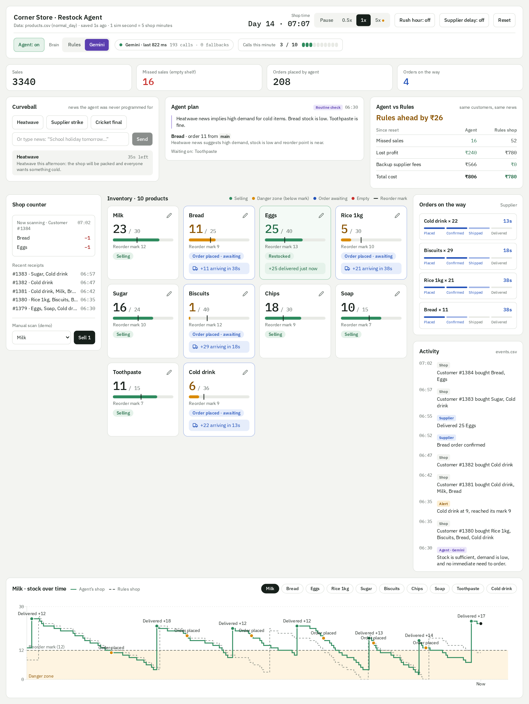

Restock Agent: What It Does
What it is
The Restock Agent is a live demo of an AI assistant that runs a small corner shop's stock room on its own. Customers come in and buy things, shelves empty, and the agent decides when to reorder, how much, and from which supplier, with nobody pressing a button.
The shop is simulated: ten everyday products (milk, bread, eggs, rice, sugar, biscuits, chips, soap, toothpaste, cold drinks), pretend customers, and pretend suppliers. Everything happens on one screen, so an audience can watch each shelf go from busy, to running low, to reordered, to restocked.
What you see on screen
Everything sits on one page and updates by itself twice a second.

| Part of the screen | What it shows |
|---|---|
| Top bar | The shop clock, speed (pause, half, normal, five times), rush hour and supplier delay switches, and which brain the agent uses |
| Shop counter | Each customer's items being scanned, plus recent receipts |
| Product cards | Every shelf: how much is left, a mark showing when it is running low, and its status in colour |
| Orders on the way | Each order moving from placed, to confirmed, to shipped, to delivered, with a countdown |
| Activity feed | A plain-English diary of what happened and why, newest first |
| Stock chart | One product's stock over time, with dots where the agent ordered and where deliveries arrived |
| Curveball, Agent plan, Agent vs Rules | The three panels that prove it is a real agent (explained below) |
A shelf's colour tells its story: green is selling well, amber means running low, blue means an order is on its way, and red means empty.
How the agent decides
The agent checks the shelves every few seconds and can use one of two "brains". You can switch between them at any time.
| Rules brain | Gemini brain (AI) | |
|---|---|---|
| How it decides | One fixed formula: when a shelf drops to its mark, refill it to full | Looks at the whole situation and uses judgement |
| What it takes into account | Only the shelf count | Recent sales, delivery times, rush hour, delays, and any news you give it |
| When it orders | Only once a shelf is already low | Can order early if it expects a rush |
| How it explains itself | The same sentence every time | A short reason in plain English for each choice |
| News it was never told about | Ignores it | Reads it and changes its plan |
The Rules brain is plain automation: it works, but only for what someone thought of in advance. The Gemini brain is the autonomous agent: it notices, decides, acts, and says why.
Proving it is a real agent
Three panels show the difference between an agent and plain automation, live, with one button press.
Curveball: news nobody planned for. You press a button or type a sentence, and the agent hears it like a shop manager would. Three ready-made curveballs change the shop for real:
- Heatwave: the shop gets packed and cold drinks sell three times faster.
- Cricket final: the shop gets packed with a run on chips, biscuits and drinks.
- Supplier strike: the usual supplier stops shipping for three minutes.
The agent is only told the news, never the exact effect, so it has to work out what it means.
A backup supplier. Besides the usual supplier, the agent can use a faster backup that costs ₹2 extra per item. It should use it only when that is cheaper than losing sales.
Agent plan. Within seconds of the news, this card shows how the agent read the situation, in its own words, and every order it placed, with the reason.
Agent vs Rules. Behind the scenes, a hidden copy of the shop gets exactly the same customers and news but is run by the fixed rules. The scoreboard compares the two: missed sales, profit lost from empty shelves (₹15 each) and backup fees. Because everything else is identical, any gap is the agent's doing.
In our test runs, one curveball at normal speed left the rules shop missing 18 to 51 sales. An agent that acts sensibly on the news finished ahead in every run, typically by ₹140 to ₹330.
Safety nets
The agent acts on its own, but inside firm limits.
- A shelf is never left to run dry. If the AI decides to wait on a shelf that is already low, the fixed rules order it anyway.
- Orders are kept sensible. The agent can't order more than a shelf can hold, or order a product that already has an order on the way.
- A cap on AI use. The AI is asked at most 10 times a minute, at least 6 seconds apart. A meter on screen shows how much of that budget is used.
- Automatic fallback. If the AI is slow (over 8 seconds), unavailable, or out of budget, the fixed rules take over and the feed marks it "Agent · Fallback". The shop never stops.
- Everything is recorded. Every sale, order, delivery and decision, with its reason, is saved to a file you can open in Excel.
Honest limits
It is a demo, and a few claims would go too far.
- It is simulated. The customers, suppliers and prices are pretend. It shows how an agent behaves, not results from a real store.
- Typed news informs the agent but doesn't change the shop. Type "cold wave tonight" and the agent will understand it and change its plan, with reasons. Customers keep buying as before, though, so the scoreboard can't show whether that was a good call. Only the three ready-made curveballs change the shop.
- The AI can still make poor calls. If it leans on the expensive backup supplier too much, the scoreboard will honestly show the rules ahead.
- A ready-made curveball could also be handled by a hand-written rule. The agent's real edge is news no one planned for. Its value is handling the unexpected without anyone writing new instructions.
"Type anything — a cold wave, a festival, a road closure. No rule exists for it, yet the agent understands it, changes its plan, and explains why."
The demo in about six minutes
- Start (0:00). The shop is paused, on the Rules brain. Explain the screen in 20 seconds, then press normal speed.
- One full cycle (0:20). Watch Milk sell down, cross its mark, get ordered, count down and restock in about a minute. Point at the sawtooth line on the stock chart.
- Without the agent (1:45). Turn the agent off, turn rush hour on and run five times faster for about 20 seconds: around five shelves go red and missed sales climb. Turn the agent back on and rush hour off to recover.
- Switch to the AI (2:45). Change the brain to Gemini. Point at the budget meter and the plain-English reasons in the feed.
- Rush hour (3:15). Turn rush hour on. The AI re-checks shelves that are getting low and orders some early, saying why.
- Prove it is an agent (4:15). Turn rush hour off and press one curveball: Cricket final shows the clearest win, Supplier strike shows the backup supplier. Read the Agent plan card aloud, then watch the scoreboard swing over one to two minutes.
- Close (5:30). Finish on the scoreboard, the activity feed and the saved files.
Tip: open the page a minute early so the AI is warmed up, and keep the AI brain at normal or half speed.